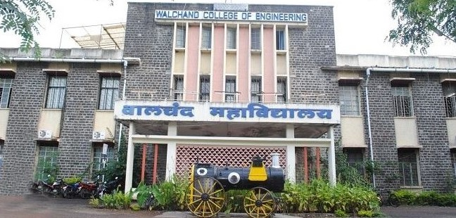
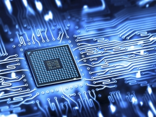

Walchand College Of Engineering, Sangli
Vishrambagh, Sangli
CHEMISTRY DEPARTMENT

About Us
The Department of Computer Science and Engineering - Walchand College of
Engineering, Sangli was established in 1986. The department has
contributed in producing several eminent engineers who are in key
positions of the Government organizations, public sector and
Multinational companies and have brought in significant contributions in
various regions of India. Alumni of the department can be found in all
public and private sector organizations operating in diverse fields,
holding senior key positions in the organizations. The Department offers
a four-year course leading to the Bachelor's Degree in Computer Science
and Engineering (B. Tech.) and a two-year course leading to Master's
degree (M. Tech.) in Computer Science and Engineering. The curriculum
contains mandatory as well as elective courses and has various tracks
and a choice based credit system with balanced theory, laboratory and
project oriented courses. The track system provides the students; the
flexibility to choose the elective courses based on the aptitude,
interests and career plan of students. Courses and course contents are
designed by taking inputs from Industry Consultation Committee (ICC).
This makes the curriculum of these programmes dynamic, in-line with the
current trends of the Computer and IT Industries. These programmes
attract meritorious students every year at the entry level for both UG
and PG programmes. Department also provides research guidance to Ph.D.
students of Shivaji University, Kolhapur. Running of Ph.D. programme in
the CSE department has boosted the research culture further. Department
is a recognised research centre of Shivaji university of Kolhapur and
Admissions are under NDF, ADF schemes and also minor centre for QIP
research scheme. Students of the department are engaged in various
co-curricular and extra-curricular activities. They proactively
participate in different prestigious competitions and have also won
various national level coding competitions such as Hackathons. The
Placement of UG students for the past three years has been consistently
above 85%. The Department is known for its reputed faculty having
expertise in diverse fields. The faculty has contributed research papers
in various Journals and Conferences. It has built up a wide research
potential in Computer Science and Engineering. The department has well
equipped engineering laboratories in the field of Deep Learning, Image
Processing and Computer Vision, IoT, Artificial Intelligence and Machine
Learning. Apart from the Central computing facility the department has
its own computing facility and continuous internet access.
FACULTIES
| Sr.No |
Name |
Designation |
Nature of association |
| 1 |
Dr. B. F. Momin |
Associate Professor |
Regular |
| 2 |
Mr. A. R. Surve |
Assistant Professor |
Regular |
| 3 |
Dr. M. A. Shah (HOD) |
Assistant Professor |
Regular |
| 4 |
Dr. N. L. Gavankar |
Assistant Professor |
Regular |
| 4 |
Mr. M. K. Chavan |
Assistant Professor |
Regular |